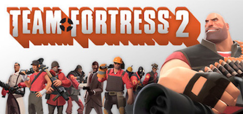
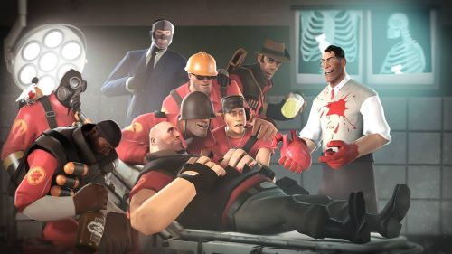

Team Fortress 2
Info
Team Fortress 2 is a multiplayer first-person shooter game developed and published by Valve Corporation. It is the sequel to the 1996 Team Fortress mod for Quake and its 1999 remake, Team Fortress Classic. The game was released in October 2007 as part of The Orange Box for Microsoft Windows and the Xbox 360, and was later ported to the PlayStation 3 in December 2007.It was released as a standalone title for Windows in April 2008, and was updated to support Mac OS X in June 2010 and Linux in February 2013. It is distributed online through Valve's digital retailer Steam, with Electronic Arts managing all physical or console editions of the game.
Team Fortress 2 has received critical acclaim for its art direction, gameplay, humor, and use of character in a wholly multiplayer game.Valve continues to release new content on a seasonal basis in the form of submissions made through the Steam Workshop. In June 2011, the game became free-to-play, supported by microtransactions for in-game cosmetics. A 'drop system' was also added and refined, allowing free-to-play users to periodically receive in-game equipment and items. Though the game has had an unofficial competitive scene since its release, both support for official competitive play through ranked matchmaking and an overhauled casual experience were added in July 2016
Gameplay
If I could describe this game in one word it would be chaotic. The multiplayer game Team fortress 2 has been out for 14 years and it is still one of the top 10 games for people playing it. What makes it special is the characters and the fighting. You have multiple game modes to play on. Payload where you push a Bomb to the end and destroy the enemies base. You get to play both sides, the side that pushes and the side that defends. Another is King of the hill where both teams try to take over a specific area and who ever holds it the longest wins the round. The last game mode is control points. It is similar to King of the hill by the attacking team must get a certain point and then advance to the next one. Each game mode you have teammates to help you out weather that is distracting, healing, or even a big attack. You could also communicate with your teammates with your own Microphone.
Personal Opinion
Team fortress 2 is my favorite multiplayer game. The game was released in October 10th, 2007 and the game is still as popular as it was 14 years ago. With each character there are specific weapons, certain speeds, and certain abilities that is only characterized for that certain character. Take Scout for example, fastest character, uses shotguns as weapons, and he can double jump to confuse players, but his downfall is that he has the lowest health and can be taken out easily. With someone like Heavy who uses miniguns and has the most health he should be the best, but sadly he is the biggest guy and gets hit by everything and the slowest character. This game balances everything out. Each character has something great about them but their Negative aspect is some other characters best aspect. What makes the Characters stand out is that all 9 playable characters have their own trailers. Not showing off what their abilities are but to get you pulled into knowing the character more. Even if the trailers did not give you enough information, there is comic books giving the past of why team Blu and Red are fighting. Over the past 14 years they have updated the game and the comics to make it modern and enjoyable for everyone joining. The company, Valve, also involves the community in the game by including their hats that they make for characters. That leads me to customization for characters. Each Mercenary can have hats that are just for aesthetic purposes, doesn’t change the game what so ever. The hats are just for fun and for goofs. They can distinguish players from the hats on top of their heads. The weapons of Team Fortress 2 are also different and unique. Weapons are different for each class but have different variants to each other. Some will do more damage but slow you down, weapons shoot faster but you take more damage, you will move faster but heal slower, and so many more. Each character, weapon, and even hats have their place in this game. They add to the game like no other game I have seen and that’s why it is the best Multiplayer game in many years.
Team Fortress 2 Trailer
Reviews and Purchase Info
Metacritic-92/100
IGN-8.9/10
Destructoid-8.5/10
This game is for free on steam for PC